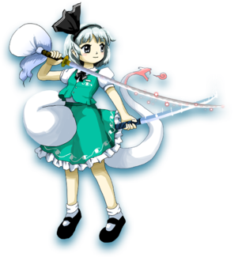
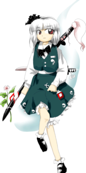
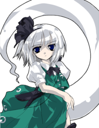
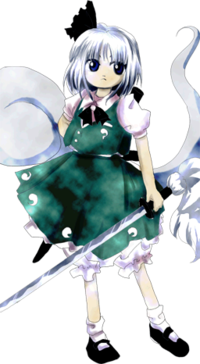
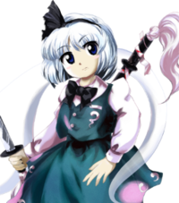
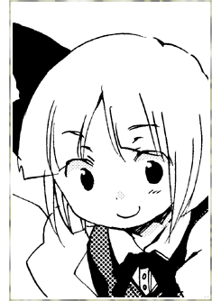
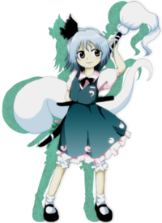

- Welcome to Touhou Wiki!
- Please register to edit. For assistance, check in with our Discord server or IRC channel.
Youmu Konpaku
Youmu Konpaku kompakɯ joːmɯ (♫) Youmu Kompaku | |
|---|---|
|
 Youmu Konpaku in Wily Beast and Weakest Creature Half-Human Half-Phantom GardenerMore Character Titles | |
| Species | |
| Abilities |
Handling sword techniques |
| Age |
Unknown, but less than 60 years old |
| Occupation |
Gardener, swordsmanship instructor |
| Location | |
Music Themes | |
| |
Appearances | |
| Official Games | |
| |
| Print Works | |
| |
| Miscellaneous Works | |
|
Miscellaneous Illustrations | |
Youmu Konpaku (魂魄 妖夢 Konpaku Youmu) is a half-human half-phantom who lives at Hakugyokurou in the Netherworld as a gardener and fencing instructor, who also serves for Yuyuko Saigyouji. She first appeared as the Stage 5 boss of Perfect Cherry Blossom, the seventh installment of the Touhou Project, and has since become a recurring playable character.
General Information[edit]
In Perfect Cherry Blossom, she gathered all of Gensokyo's spring at Yuyuko's instruction, which was the reason Gensokyo's winter did not end. In Bohemian Archive in Japanese Red and Chapter 13 of Curiosities of Lotus Asia, she took on the responsibility for collecting and returning the phantoms that wandered around Gensokyo as a result of the boundary of the Netherworld being thinned.
She belongs to the subspecies of phantoms called the "half-human half-phantoms" (半人半霊 "hannin hanrei" or "hanjin hanrei"). Half-human half-phantoms are the mixed-race of phantoms and humans (幽霊と人間のハーフ), which have a largish phantom accompanying them and a relativity long life span compared to humans. The phantom that always follows them is called the "half-phantom" (半霊[1]、半幽霊[2] hanrei, hanyuurei), and they are the other half of their body.[3] In Perfect Memento in Strict Sense, it was supposed that Youmu's human half manipulates the phantom half consciously. Youmu's human half has a lower body temperature compared to normal humans, and her phantom half's body temperature is not so cold compared to normal phantoms. In the Imperishable Night manual, it was written, "she has two kinds of body: human and phantom," showing Youmu to be "human" and the phantom to be "phantom."
Half-human half-phantoms are long-lived,[4][5] but in Seasonal Dream Vision, since it has still not been 60 years since the time she was born, in Phantasmagoria of Flower View, she was not very knowledgeable about the "flower incident that occurs once every 60 years."[6]
Personality[edit]
As she has a straightforward diligent personality, she is often manipulated by those around her (especially Yuyuko).[2][7] For this reason, she often fails at her task, but that does not mean that she has no real power, and she particularly excels at instantaneous force and concentration power.[8] In Immaterial and Missing Power, as literally stated by the shishou, "truth-slashing is something which you know," so she often performs tsujigiri-like moves, but Suika Ibuki pointed out that she does not think that Youmu understood her shishou's teachings.
She has strong sensitivity, and in the good ending of Imperishable Night, her human half was unable to resist the insanity-inducing effects of the true Moon, causing her to become "half-insane". Ironically enough, considering her species, she is afraid of ghost stories, dares, and darkness, but she is calm around phantoms since she is half phantom herself.[9] In Imperishable Night's Extra. After defeating Fujiwara no Mokou, Yuyuko pretends there is a ghost under a tree, earning a terrified shriek from Youmu. Much further on in Ten Desires, as a result of being mistaken as a hermit, she temporarily mistook herself as being a hermit.[1] Due to artworks and her sprite in the fighting spin-offs, Youmu may be ambidextrous.
Occupation[edit]
Youmu is, as a gardener attached to the Saigyouji family and the bodyguard of Yuyuko Saigyouji, a swordsperson of a two-sword school of fencing.
According to the Saigyouji family, Youmu is the second generation to take her position, the former generation being Youki Konpaku. Youki was Youmu's fencing shishou. Youmu is also Yuyuko's sword instructor, but she is fundamentally treated as a gardener.[2]
Possessions[edit]
The katana, carried from her left shoulder to her waist on the right side, is Roukanken (楼観剣, lit. "high-building sword"). It has been claimed to have been forged by youkai, and has the power to kill ten phantoms in one slice.[10] The shorter sword on her left waist is a wakizashi named Hakurouken (白楼剣, lit. "plain-building sword"), which seems to be the heirloom of the Konpaku family, and can slice through people's confusion.[4]
Background Information[edit]
Name[edit]
Her full name is Youmu Konpaku (魂魄 妖夢). The characters for Konpaku (魂魄) means "soul", and Youmu (妖夢) probably means "ghostly dream" in the context regarding her characteristic. Bear in mind that the "n" is an "m" sound; this is because it flows more smoothly in Japanese when it's before a "p" sound.
Although both kon (魂) and paku (魄) means "soul", their elements are different. Kon stands for a "mental" soul, which is separated from a body as soon as human dies and ascends to Heaven; paku is a "physical" soul, which remains in the body a few days and goes back to the Earth. In this case, kon is Youmu's ghostly half, and paku is the human half. The entire Konpaku family is comprised of half-phantom half-humans.[4]
The kanji that makes up Youmu (妖夢) are also part of the kanji for Perfect Cherry Blossom (東方妖々夢 Touhou youyoumu).
In Phantasmagoria of Flower View, Youmu's name is written in romaji, with her surname first, during pre-battle conversation with her, even though every other character in the game with a Japanese name has their name romanized western-style, with their first names first. This is one of several typographical inconsistencies in the game (another being the inconsistent spelling of Aya Shameimaru's name).
Design[edit]
In Perfect Cherry Blossom, Youmu has short silver hair worn in a bob cut, and bright red eyes. She wears a dark green and white dress with several ghost insignias along the edges and a ghost insignia as well on her breast pocket, and a black ribbon tied off-center in her hair. She carries the Roukanken; a long katana with a cherry blossom insignia and a flower attached to it, and the Hakurouken; a wakizashi (Short Japanese sword). Her ghostly half is a formless white phantom as large as her human self.
In every later game, Youmu has slight design alterations such as white hair in Immaterial and Missing Power, eye color changes, and lighter green on her dress. In every game after Perfect Cherry Blossom, Youmu wears short sleeves.
As of Ten Desires, Youmu's appearance stays mostly the same, the only major change being her hair arranged in a messy style.
According to ZUN, her height is "fairly short."[11]
Youmu's Appearances[edit]
Games[edit]
- Perfect Cherry Blossom
During the events of Perfect Cherry Blossom, Youmu was ordered by Yuyuko Saigyouji to gather as much spring essence from Gensokyo as she could in order to get the entire cherry blossom garden, including the legendary Saigyou Ayakashi, to bloom perfectly. Youmu's efforts indirectly caused winter to continue unchecked in Gensokyo, prompting the player to find the source of the problem. Youmu tried to prevent the player from reaching Hakugyokurou, but was defeated. She also tried to stop the player's confrontation against Yuyuko, but was defeated again.
- Main article: Reimu Arc
<Insert Summary>
- Main article: Marisa Arc
<Insert Summary>
- Main article: Sakuya Arc
<Insert Summary>
- Imperishable Night
- Main article: Imperishable Night Ghost Team's Scenario 1
In Imperishable Night, she traveled to the world of the living with the intent to fix the moon--although Yuyuko was more interested in having a feasting tour with a "dragon dish" as the crowning attraction.
- Phantasmagoria of Flower View
- Main article: Phantasmagoria of Flower View Story
In Phantasmagoria of Flower View, she was minding her own business but kept encountering various people barging into Hakugyokurou suspecting her of being behind the flower incident. When she traveled to Gensokyo herself to behold the spectacle, she had a hunch about what was going on but only realized it fully when Aya Shameimaru pointed it out. Realizing that the incident was caused by an overabundance of spirits possessing the flowers, Youmu cut down some spirits to reduce their numbers a bit. This leads her into confrontation with Komachi Onozuka, who tells her she should not be cutting down spirits while in the world of the living because they haven't received judgement yet. Youmu protests that she's always allowed to kill phantoms while in the Netherworld, to which Komachi replies that phantoms in the Netherworld and phantoms above are two different things.
Eiki Shiki, Yamaxanadu hears about Komachi's confrontation with Youmu and comes to meet Youmu herself. She explains about the phantoms inhabiting the flowers, and that the problem will go away by itself and Youmu should leave it alone. She then goes further about how Youmu's activities in the world of the living are coming dangerously close to getting Youmu classified as living and thus subject to judgement, and decides to carry out a little judgement on Youmu beforehand.
In the end, Youmu arrives back at the Netherworld. Yuyuko was also asked by Eiki to teach Youmu more about the nature of spirits. Unfortunately, Yuyuko Saigyouji ends up misinterpreting that she's supposed to teach Youmu in a general sense, and ends up teaching Youmu how to pour delicious tea. Eiki in her storyline ends up having to elaborate and clarify her lecture to Youmu when Eiki confronts her again. Youmu's sword works on spirits by severing hesitation, which is the equivalent of helping someone reach Nirvana, and Youmu is not qualified to judge such a thing. In her winquote to Eiki, Youmu apologizes for the trouble she's caused, and thanks Eiki while saying she now understands the nature of her sword.
- Ten Desires
- Main article: Youmu's Arc
Youmu re-appears as a playable character in Ten Desires. She was baffled about the divine spirits, so she went out to investigate.
Spin-offs[edit]
- Immaterial and Missing Power
- Main article: Immaterial and Missing Power Youmu's Scenario
- Shoot the Bullet
In Shoot the Bullet, Youmu is a target level 6, where she'll use spell cards when Aya Shameimaru take photos of her and her danmaku.
- Scarlet Weather Rhapsody
- Main article: Scarlet Weather Rhapsody Youmu's Scenario
During the events of Scarlet Weather Rhapsody, she set off to investigate, concerned as to how and why someone was slaying spirits. After a hint from Yukari Yakumo, she found and defeated Tenshi Hinanawi.
- Hopeless Masquerade

Youmu appears as a background cameo in Hopeless Masquerade on the Divine Spirit Mausoleum stage. She is seen with Yuyuko Saigyouji as she endlessly feeds her rice balls.
- Impossible Spell Card
- Main article: Impossible Spell Card: Story
After apparently reading the newspaper by the tengu about a mischief-making amanojaku, she becomes one of the many strong youkai and humans to try and stop Seija Kijin. She uses spell cards that are considered impossible to dodge.
Literature[edit]
- Curiosities of Lotus Asia
Youmu travels out to Kourindou in search of the Soul Torch, an item given to her by Yuyuko that she had lost. Rinnosuke does in fact have it, and it turns out to be the reason for a large quantity of ghosts floating around the shop recently. Rinnosuke wasn't willing to part with it unless paid, however, so Youmu ended up shoveling the snow out of the front of the shop and off of the roof to pay for it.
Relationships[edit]
Yuyuko Saigyouji[edit]
Youmu's mistress, ever since Youmu was born (stated by Youmu in Bohemian Archive in Japanese Red). Youmu is completely loyal to her, but has trouble understanding her.
Yukari Yakumo[edit]
The friend of Youmu's mistress. Youmu respects her greatly and she helps Youmu with lessons and advice, but Youmu doesn't understand her, either. She also treats Yukari's servant, Ran Yakumo, with professional respect, even though Yuyuko says she doesn't have to.
Residents of Eientei[edit]
From Imperishable Night, Youmu is one of the few characters that is aware that three of the residents of Eientei are from the Moon, and presumably keeping it a secret like the others.
Eiki Shiki, Yamaxanadu[edit]
As a yama, Eiki is one of the superiors of Youmu's mistress, Yuyuko. Youmu is aware of the role of the yama and respects Eiki greatly, but hadn't met her in-person until Phantasmagoria of Flower View. In Youmu's ending, Eiki also asked Yuyuko to teach Youmu more about the nature of cutting down spirits. Eiki notes if Youmu loses to her in the story mode that Youmu would normally not go to Eiki for judging upon death.
Komachi Onozuka[edit]
Youmu and Komachi first met in Phantasmagoria of Flower View. As a ferryman under the yama, Komachi could also be considered a fellow employee of sorts with Youmu, although their lines of work do not cross very often. Youmu is aware of Komachi's position and respects her a lot, often thanking her for her work on ferrying the dead whenever the two meet. Komachi also tries to teach Youmu about how Youmu should not cut down ghosts too often, and sees Youmu as "an interesting fellow" in Scarlet Weather Rhapsody.
Others in general[edit]
Youmu is acquainted with many other major characters (be it from their visits to the Netherworld or Youmu's own investigations), but generally not close to them personally. Being straight forward and earnest, Youmu tends to get picked on a lot.
Gallery[edit]
Youmu artwork from Perfect Cherry Blossom
Portrait during her Last Word with red eyes from Imperishable Night
Youmu artwork from Phantasmagoria of Flower View
Alternate outfit from Phantasmagoria of Flower View
Youmu artwork from Touhou Hisoutensoku
Youmu in Curiosities of Lotus Asia
Illustration of Youmu in Strange and Bright Nature Deity by Nemu Matsukura
Illustration of Youmu in Bohemian Archive in Japanese Red
Another illustration of Youmu from Bohemian Archive in Japanese Red
Youmu in Strange and Bright Nature Deity
Youmu cameo in Extra of the Wind
Youmu in Silent Sinner in Blue
Youmu party outfit in Silent Sinner in Blue
Youmu in Cage in Lunatic Runagate
Youmu in Oriental Sacred Place
Youmu's Sigil in The Grimoire of Marisa.
Youmu's different color palettes from Touhou Hisoutensoku. The 2nd one corresponds to her second color palette in SWR, while the 3rd one corresponds to her IaMP palette.
Youmu's sigil from Touhou Hisoutensoku
Youmu's illustration by ZUN
Youmu and Yuyuko bonus drawing from Forbidden Scrollery Vol. 6 by Moe Harukawa
Skills[edit]
| Name | Translated | Comments | Games | Usage | ||
|---|---|---|---|---|---|---|
| Total: 17 | ||||||
| 反射下界斬 | Lower Realm Reflection Slash | IaMP SWR |
236C Default 236B/C | |||
| 弦月斬 | Crescent Moon Slash | IaMP SWR |
623A Default 623B/C | |||
| 天界法輪斬 | Heavenly Halo Slash | IaMP | 623B | |||
| 生死流転斬 | Transmigration Slash | IaMP SWR |
214A/B Default 214B/C | |||
| 折伏無間 | Preaching Avici | IaMP SWR |
41236AB Alternate 623B/C | |||
| 「六道怪奇」 | Bizarreness of Six Realms | IN | Familiar:「半幽霊」"Phantom Half" | |||
| 「断迷剣」 | "Hesitation-Cutting Sword" | PoFV | Charge attack | |||
| 「未断の魂」 | "Irresolute Soul" | PoFV | EX attack | |||
| 憑坐の縛 | Spirit Medium's Bind | SWR | Default 22B/C | |||
| 結跏趺斬 | Lotus Posture Slash | SWR TD WBaWC |
Alternate 236B/C Focused (charge + release) Focused (charge + release) | |||
| 心抄斬 | Heart Excerpt Slash | SWR | Alternate 214B/C | |||
| 悪し魂 | Wicked Soul | SWR | Alternate 22B/C | |||
| 炯眼剣 | Insightful Sword | SWR | Alternate 623B/C | |||
| 奇び半身 | Strange Half-Body | SWR | Alternate 22B/C | |||
| 燐気斬 | Phosphoric Slash | Soku | Alternate 236B/C | |||
| 頭上花剪斬 | Slashing a Flower Upon One's Head | Soku | Alternate 214B/C | |||
| 剣気 | Sword Aura | TD WBaWC |
Unfocused Unfocused | |||
Spell Cards[edit]
| Name | Translated | Comments | Games | Stage | ||
|---|---|---|---|---|---|---|
| Total: 40 | ||||||
| 幽鬼剣「妖童餓鬼の断食」 | Ghost Sword "Fasting of the Young Preta" | PCB | St. 5: E/N | |||
| 餓鬼剣「餓鬼道草紙」 | Preta Sword "Scroll of the Preta Realm" | PCB | St. 5: H | |||
| 餓王剣「餓鬼十王の報い」 | Hungry King Sword "Ten Kings' Retribution on the Preta" | PCB | St. 5: L | |||
| 獄界剣「二百由旬の一閃」 | Hell Realm Sword "Two Hundred Yojana in One Slash" | PCB GoM |
St. 5: E/N — | |||
| 獄炎剣「業風閃影陣」 | Hell Fire Sword "Sudden Phantom Formation Slash of Karmic Wind" | PCB | St. 5: H | |||
| 獄神剣「業風神閃斬」 符の参「業風神閃斬」 |
Hell God Sword "Sudden Divine Severing of Karmic Wind" Third Card "Sudden Divine Severing of Karmic Wind" |
PCB IaMP |
St. 5: L Story | |||
| 畜趣剣「無為無策の冥罰」 | Animal Realm Sword "Karmic Punishment of the Idle and Unfocused" | PCB | St. 5: E/N | |||
| 修羅剣「現世妄執」 | Asura Sword "Obsession with the Present World" | PCB | St. 5: H/L | |||
| 人界剣「悟入幻想」 | Human Realm Sword "Fantasy of Entering Enlightenment" | PCB GoM |
St. 5: E/N — | |||
| 人世剣「大悟顕晦」 | Human Era Sword "Great Enlightenment Appearing and Disappearing" | PCB | St. 5: H | |||
| 人神剣「俗諦常住」 | Human God Sword "Constancy of the Conventional Truth" | PCB | St. 5: L | |||
| 天上剣「天人の五衰」 | Heaven Sword "Five Signs of the Dying Deva" | PCB GoM |
St. 5: E/N — | |||
| 天界剣「七魄忌諱」 | Deva Realm Sword "Displeasure of the Seven Hakus" | PCB | St. 5: H | |||
| 天神剣「三魂七魄」 | Heaven God Sword "Three Kons, Seven Hakus" | PCB | St. 5: L | |||
| 六道剣「一念無量劫」 | Six Realms Sword "A Single Thought and Infinite Kalpas" | PCB GoM |
St. 6: E/N/H/L — | |||
| 人符「現世斬」 | Human Sign "Slash of Present World" | IaMP IN SWR |
Use Use Use | |||
| 人鬼「未来永劫斬」 | Human Oni "Slash of the Eternal Future" | IaMP IN SWR |
Use Use Use | |||
| 断命剣「冥想斬」 | Life-Cutting Sword "Slash of Meditation" | IaMP SWR |
Use Use | |||
| 断迷剣「迷津慈航斬」 | Hesitation-Cutting Sword "Slash of Departure from Hesitation" | IaMP SWR GoM |
Use Use — | |||
| 魂符「幽明の苦輪」 | Soul Sign "Wheel of Pain of the Living and Dead" | IaMP SWR |
Use Use | |||
| 魂魄「幽明求聞持聡明の法」 | Konpaku "Dharma of Gumonji Wisdom of the Living and Dead" | IaMP SWR |
Use USe | |||
| 符の壱「二重の苦輪」 | First Card "Double Wheel of Pain" | IaMP | Story | |||
| 符の弐「心眼迷想斬」 | Second Card "Slash of Delusional Inner Eye" | IaMP | Story | |||
| 奥義「西行春風斬」 | Arcanum "Slash of Saigyou Spring Wind" | IaMP | Story | |||
| 「待宵反射衛星斬」 | "Matsuyoi-Reflecting Satellite Slash" | IN GoM |
LW — | |||
| 迷符「纏縛剣」 | Hesitation Sign "Sword of Binding Desires" | PoFV | Use | |||
| 迷符「半身大悟」 | Hesitation Sign "Half-Body Disillusion" | PoFV | Use | |||
| 人智剣「天女返し」 | Human Knowledge Sword "Turning Angel Cut" | StB SWR |
St. 6 Story | |||
| 妄執剣「修羅の血」 | Obsession Sword "Blood of Asura" | StB | St. 6 | |||
| 天星剣「涅槃寂静の如し」 | Celestial Star Sword "As the Silent Nirvana" | StB GoM |
St. 6 — | |||
| 四生剣「衆生無情の響き」 | Four Births Sword "Echoes of the Inclemency of All Beings" | StB | St. 6 | |||
| 剣伎「桜花閃々」 | Sword Skill "Cherry Blossom Flashing" | SWR | Use | |||
| 断霊剣「成仏得脱斬」 | Spirit-Cutting Sword "Slash of Ascension to Buddhahood" | SWR | Use | |||
| 桜花剣「閃々散華」 | Cherry Blossom Sword "Flashing Scattered Flowers" | SWR | Story | |||
| 断想剣「草木成仏斬」 | Thought-Cutting Sword "Slash of the Buddhahood of Flora" | SWR | Story | |||
| 瞑斬「楼観から弾をも断つ心の眼」 | Closed-Eye Slash "The Bullet-Cutting Spirit Eye from Roukan" | SWR | Story | |||
| 転生剣「円心流転斬」 | Reincarnation Sword "Slash of Circular Vicissitude" | Soku | Use | |||
| 空観剣「六根清浄斬」 | Voidness Sword "Slash Clearing the Six Senses" | Soku TD |
Use Use | |||
| 光符「冥府光芒一閃」 | Light Sign "Light Flash of the Netherworld" | ISC | St. 7 | |||
| 彼岸剣「地獄極楽滅多斬り」 | Higan Sword "Hacking Slashes of Hell and Paradise" | ISC | St. 7 | |||
Additional Information[edit]
- Her theme song is titled "Hiroari Shoots A Strange Bird ~ Till When?", named after a story in Taiheiki, which a warrior named Hiroari slays a youkai known as Itsumade (以津真天). This is an homage to the storyline. Judging from the story of Perfect Cherry Blossom, the heroine plays the role of Hiroari, Youmu is Itsumade, and the corpse is probably Yuyuko Saigyouji. (See also Flandre Scarlet and Yukari Yakumo.)
- In Touhou Hisoutensoku, one of Youmu's new Spell Cards resembles one of Grant's supers from Garou: Mark of the Wolves.
- Also in Touhou Hisoutensoku, one of Youmu's palette swaps seems to resemble Nue Houjuu.
Fandom[edit]
Official Profiles[edit]
|  | ○幽人の庭師 魂魄 妖夢（こんぱく・ようむ） ５面のボス、幽霊と人間のハーフ。 妖夢は、一振りで幽霊１０匹分の殺傷力を持つ長刀「楼観剣（ろうか
今回、西行寺お嬢様の命令により西行妖（さいぎょうあやかし）を満 ここ白玉楼には、西行妖の他にも桜が数多くあるが、毎年西行妖だけ 「それは凄い桜だったが、もう二度と咲くことは無いだろう。」と、 言っていたのである。 妖夢は、（もちろんお嬢様の誇張だが）幅２００由旬にも及ぶと言わ 今年も例外ではなく、近年まれに見る見事な花模様に幽霊達も大感激。 後は、西行妖の開花を待つのみであった。 |
Phantom-Human Gardener Konpaku Youmu Stage 5 boss, a being of half-human and half-phantom. She's both the second gardener for the Saigyouji clan and the guardian of their mistress. Mainly she posses the ability to handle sword techniques. Youmu looks after the garden with two swords: Roukan-ken is a longer sword that has the power of killing ten phantoms; Hakurou-ken is a shorter one that can slash down the confusion of humans. Youki Konpaku, the former gardener, had been the one for about 300 years, but suddenly became a hermit after having made a very young Youmu his successor. Youmu's ability of swordsmanship has still been in progress, so she needs daily practice. Though Youmu herself has no clue where her master is, she thinks of her master's absence as a lesson from him. This time, following the order the mistress of Saigyouji gave her, she has gathered all of spring essences in Gensokyo to make Saigyou Ayakashi bloom fully. Here in Hakugyokurou, there are so many cherry blossoms besides Saigyou Ayakashi, which has never bloomed. The former gardener said, "I've seen the fully-bloomed Saigyou Ayakashi before, but this might be the last time." At that time, Youmu had no idea what he meant and why the mistress of Saigyouji gave her such an order. Youmu sweeps the garden of the Saigyouji family; it's about 200 yojanas long (The mistress exaggerates, of course).[12] This garden has a terrifyingly large amount of cherry trees, where they are attractions for residents all over the Netherworld. When spring comes, Youmu is very busy in sweeping. This year isn't the exception, too. The ghosts are really thrilled by the wonderful cherry trees. Everyone said, "I'm happy to be a ghost!" On the other hand, Youmu, the half-human saw this raving scene and half-sympathised by saying: "I'm half happy to be a half phantom!" Now, all she should do is wait for the blooming of Saigyou Ayakashi. |
|  | ○生命の二刀流 魂魄 妖夢（こんぱくようむ） 種族：人間と幽霊のハーフ 白玉楼で住み込みで働く庭師。半分人間で半分幽霊、半分生きていて半分死んでいる、半分実在していて半分幻という半人前。でも剣は二本。 性格は何事にも一所懸命だが、それが報われることが少ない。癖のある連中が多すぎる幻想郷では、真っ直ぐ過ぎてからかわれやすい性格でもある。 体術は半人前ながらも非常に優れている。妖術も半人前ながら優れており、実はバランスが取れている。妖怪が鍛えたという楼観剣と白楼剣を操り、敵だろうが霊だろうが弾幕だろうが人の悩みだろうが斬ることが出来る。斬れない物は少ししかない。 楼観剣（長い方）は一振りで幽霊10匹分の殺傷力を持つ。白楼剣は、人間の迷いを斬る事が出来ると言われているが、勿論、両方とも生身の人間を斬ることも出来る。 |
Dual-Wielder of Lives Konpaku Youmu Species: Half-human half-phantom A gardener who works in Hakugyokurou and lives there. She's half-human and half-phantom, half-dead and half-alive, half-phantom and half-reality, and altogether half-baked. Yet she has two swords. She applies all her effort to anything and everything, but it hardly ever pays off. Compared to the quirky cast of characters that inhabits Gensokyo, her all too straightforward personality makes her easy to tease. She's very good at fighting arts for someone so half-baked. She's also quite good at magic for such a half-baked character, and actually has a good sense of balance between the two. Using the Roukanken and Hakurouken, which were said to be forged by youkai, she can cut through enemies and ghosts and bullets and people's worries. The things she can't cut through are next to none. Roukanken (the longer one) has the power to kill ten ghosts in one slash. Hakurouken is said to be able to cut through people's confusion, but of course, both of them can also kill living humans. |
|  | ○半人半霊 魂魄 妖夢（こんぱくようむ） 人間と幽霊のハーフ。 武器は真剣。必死という意味もあるかも知れない。 備考 ちなみに半幽霊の位置は、妖怪切り |
Half-Human Half-Phantom Konpaku Youmu A being that is half a human and half a phantom. She's so immature you can't help liking her because of her straightforward and pure character, yet she's always made fun by anybody for her nature. Her weapon is serious manners, which may reaches a sense of desperation.
|
| ○半人半霊 魂魄 妖夢（こんぱく ようむ） 種族：人間と幽霊のハーフ 冥界にある白玉楼の庭師。 生きているのか死んでいるのか、人間なのかそうじゃないのか、本人にも判らない。でも人より寿命が長いが、死は訪れるらしいので、やはり生きているのかも知れない。魂魄の剣は主に霊体向きの剣ではあるが、生きている者も斬れる。 |
Half-Human Half-Phantom
Species: Half-human half-phantom She's the gardener of Hakugyokurou, which is in the world past death, but actually she is a swordmanship teacher for Yuyuko. Even she herself is not certain whether she is alive or not, or whether she is considered a human. Even though she has longer life expectancy than human's, it seems that she can experience death, so maybe she is alive. Konpaku's swords were designed primarily for use against spiritual beings, but they still seem to work well against living beings. |
|  | ○半人半霊の半人前 魂魄 妖夢（こんぱく ようむ） 人間と幽霊のハーフさん。 幻想郷は花でいっぱいであることを知り、ちょっと様子を見に出てきた。花に隠れて幽霊も多くなっていることに気付いたが、取りあえず見て見ぬふりをしていた。 |
Half-Human Half-Phantom and Half-Baked Konpaku Youmu A girl who's half-human and half-phantom. Knowing that the flowers were in full bloom in Gensokyo, she came to see the scenery. Though she saw lots of ghosts hiding behind the flowers, she pretended not to see them. |
| ○半人半霊の半人前 魂魄 妖夢（こんぱく ようむ） 種族：人間と幽霊のハーフ 冥界にある白玉楼の庭師。 幻想郷は花でいっぱいであることを知り、ちょっと様子を見に出てきた。花に隠れて幽霊も多くなっていることに気付いたが、取りあえず見て見ぬふりをしていた。 |
Half-Human Half-Phantom and Half-Baked
Species: Half-human half-phantom A gardener of Hakugyokurou in the Netherworld. Knowing that flowers are in full bloom in Gensokyo, she came to watch the scenery. Though she saw lots of ghosts hidden behind the flowers, she pretended not to see them. |
| ○半分幻の庭師 魂魄 妖夢（こんぱく ようむ） 種族：人間と幽霊のハーフ |
Half-fantasy Gardener Youmu Konpaku Race: Half-human half-phantom |
|  | 魂魄 妖夢（こんぱく ようむ） 幽霊／剣術を扱う程度の能力 西行寺に仕える庭師兼、剣術指南役。幽霊と人間の親を |
|  | ○半人半霊の庭師 魂魄 妖夢（こんぱく ようむ） 種族：人間と幽霊のハーフ 冥界の庭師兼、西行寺幽々子の剣の指南役。 白玉楼のもの凄く広い庭の整備を担っている為、毎日の業務が大変。 突如として現れた奇妙な霊、神霊は人間の欲の具現した物であった。 |
Half-Human Half-Phantom Gardener Youmu Konpaku Species: Half-human half-phantom The gardener of the Netherworld, and Yuyuko Saigyouji's swordsmanship teacher. She is always busy doing her chores as the gardener of the incredibly large Hakugyokurou garden. She's straightforward and always on her duty, but very easy to deceive. The phantoms haven't been making much of a fuss these days, so she's somewhat peace-addled. The bizarre spirits that suddenly appeared-- "divine spirits"-- were beings composed of the desires of humans. Their existence was transient, so they disappeared quickly, but she went off to investigate hoping that there will be no more incidents relating to any kind of spirits in the future. |
| ○半人半霊の二刀剣士 魂魄 妖夢（こんぱく ようむ） 種族：人間と幽霊のハーフ 冥界の庭師。少し抜けている。 動物霊が地獄から攻め込んできたという報告を受け、彼女が調査に乗り出した。 |
Half-Human Half-Phantom Gardener Youmu Konpaku Species: Half-human half-phantom The gardener of the Netherworld. A bit scatterbrained. She received a report that beast spirits were invading from Hell, and set out to investigate. |
Official Sources[edit]
- 2003/08/17 Perfect Cherry Blossom - Stage 5 dialogue; Stage 6 dialogue; キャラ設定.txt (official profile)
- 2004/08/15 Imperishable Night - Ghost Team Scenario; Ghost Team Extra Stage; キャラ設定.txt (official profile)
- 2004/12/30 Immaterial and Missing Power - Youmu story dialogue; 上海アリス通信.txt (official profile)
- 2005/02/25 Curiosities of Lotus Asia - Chapter 13
- 2005/08/11 Bohemian Archive in Japanese Red - Article and Interview: Youmu Konpaku
- 2005/08/14 Phantasmagoria of Flower View - Youmu story dialogue; キャラ設定.txt (official profile)
- 2005/10/01 Seasonal Dream Vision/A Beautiful Flower Blooming Violet Every Sixty Years
- 2005/12/30 Shoot the Bullet - Stage 6 spellcard comments
- 2006/09/26 Strange and Bright Nature Deity - Chapter 2
- 2006/12/27 Perfect Memento in Strict Sense - Half-Human Half-Phantom Gardener: Youmu Konpaku
- 2007/06/08 ~ 2009/04/09 Silent Sinner in Blue
- 2008/05/25 Scarlet Weather Rhapsody - Youmu story dialogue; chara.html (official profile)
- 2008/12/25 Cage in Lunatic Runagate - Chapter 7
- 2009/07/28 The Grimoire of Marisa - Youmu Konpaku's Spell Cards
- 2009/08/26 Oriental Sacred Place - Chapter 4
- 2011/08/13 Ten Desires - Youmu's Scenario & Extra Stage dialogue; キャラ設定とエキストラストーリー.txt (official profile)
References[edit]
- ↑ 1.0 1.1 Youmu's Parallel Ending in Ten Desires
- ↑ 2.0 2.1 2.2 Imperishable Night: Manual
- ↑ According to the ZUN's comment in the 2nd THWiki Popularity Poll (「第2回東方シリーズ人気投票」（2003年9月開催）キャラ部門・魂魄妖夢 におけるZUNの投稿)
- ↑ 4.0 4.1 4.2 Perfect Memento in Strict Sense: Youmu
- ↑ Imperishable Night: Character setting.txt
- ↑ Seasonal Dream Vision/A Beautiful Flower Blooming Violet Every Sixty Years
- ↑ Immaterial and Missing Power: Shanghai Alice Communications.txt
- ↑ Shanghai Alice Correspondence Three Fairies Version/Volume 7
- ↑ Imperishable Night omake.txt, Strange and Bright Nature Deity chapter 2, Oriental Sacred Place chapters 3-4, Cage in Lunatic Runagate chapter 7
- ↑ Perfect Cherry Blossom - 5th stage's dialog, "Shanghai Alice Correspondence Vol.5" in Immaterial and Missing Power, Perfect Memento in Strict Sense pp.22-24。
- ↑ ZUN's E-mails
- ↑ Yojana (योजन) is a unit of the distance that was used in ancient India. The exact length of the unit was not defined, but it's said that 1 yojana equals about 10-15 kilometers. In other words, if you taken Yuyuko's word as it is, then the Saigyouji's garden is supposed to be about 2,000-3,000 kilometers long.
| This page is part of Project Characters, a Touhou Wiki project that aims to write proper descriptions for all official characters of Touhou Project. Please keep the character page guidelines in mind when contributing. |